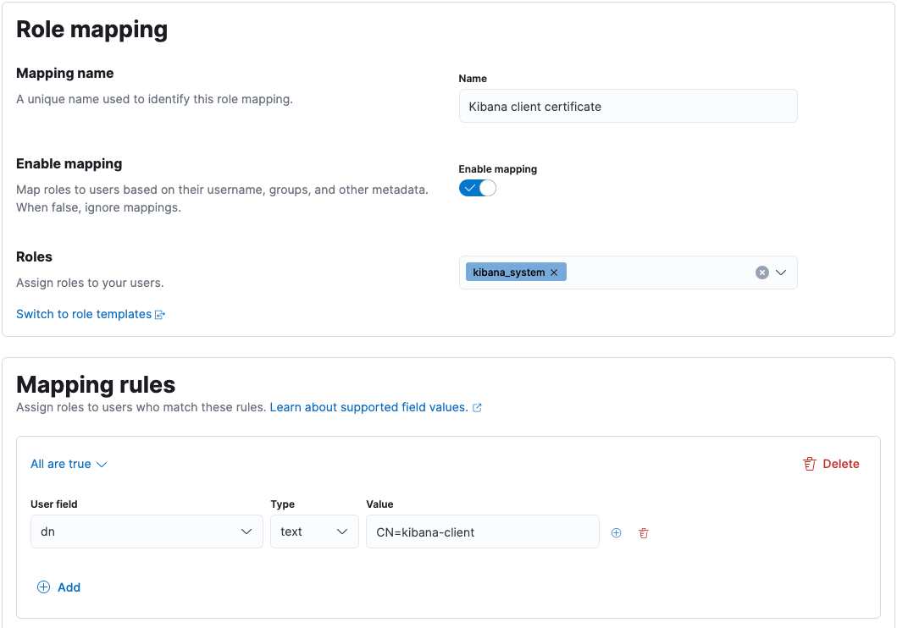

Mutual TLS authentication between Kibana and Elasticsearch
editSecure Sockets Layer (SSL) and Transport Layer Security (TLS) provide encryption for data-in-transit. While these terms are often used interchangeably, Kibana supports only TLS, which supersedes the old SSL protocols.
TLS requires X.509 certificates to authenticate the communicating parties and perform encryption of data-in-transit. Each certificate contains a public key and has and an associated — but separate — private key; these keys are used for cryptographic operations. Kibana supports certificates and private keys in PEM or PKCS#12 format.
In a standard TLS configuration, the server presents a signed certificate to authenticate itself to the client. In a mutual TLS configuration, the client also presents a signed certificate to authenticate itself to the server.
Elasticsearch security features are enabled on your cluster by default, so each request that Kibana (the client) makes to Elasticsearch (the server) is authenticated. Most requests made by end users through Kibana to Elasticsearch are authenticated by using the credentials of the logged-in user.
To enroll Kibana with an Elasticsearch cluster, you pass a generated enrollment token. This token
configures Kibana to authenticate with Elasticsearch using a
service account token.
Kibana also supports mutual TLS authentication with Elasticsearch via a
Public Key Infrastructure (PKI) realm. With this setup,
Elasticsearch needs to verify the signature on the Kibana client certificate, and it also
needs to map the client certificate’s distinguished name (DN) to the appropriate
kibana_system role.
Using a PKI realm is a subscription feature.
Configure Kibana and Elasticsearch to use mutual TLS authentication
editIf you haven’t already, start Kibana and connect it to Elasticsearch using the enrollment token.
-
Obtain a client certificate and private key for Kibana.
Kibana uses the client certificate and corresponding private key when connecting to Elasticsearch.
This is not the same as the server certificate that Kibana will present to web browsers.
You may choose to generate a client certificate and private key using the
elasticsearch-certutiltool. If you followed the Elasticsearch documentation for generating the certificates authority, then you already have a certificate authority (CA) to sign the Elasticsearch server certificate. You may choose to use the same CA to sign the Kibana client certificate. For example:bin/elasticsearch-certutil cert -ca elastic-stack-ca.p12 -name kibana-client -dns <your_kibana_hostname>
This will generate a client certificate and private key in a PKCS#12 file named
kibana-client.p12. In this example, the client certificate has a Common Name (CN) of"kibana-client"and a subject alternative name (SAN) of"<your_kibana_hostname>". The SAN may be required if you have hostname verification enabled on Elasticsearch. -
Obtain the certificate authority (CA) certificate chain for Kibana.
Elasticsearch needs the appropriate CA certificate chain to properly establish trust when receiving connections from Kibana.
If you followed the instructions to generate a client certificate, then you will have a PKCS#12 file for Kibana. You can extract the CA certificate chain from this file. For example:
openssl pkcs12 -in kibana-client.p12 -cacerts -nokeys -out kibana-ca.crt
This will produce a PEM-formatted file named
kibana-ca.crtthat contains the CA certificate from the PKCS#12 file. -
Configure Elasticsearch with a PKI realm and a native realm.
By default, Elasticsearch provides a native realm for authenticating with a username and password. However, to support both a PKI realm (for Kibana) and a native realm (for end users), you must configure each realm in
elasticsearch.yml:xpack.security.authc.realms.pki.realm1.order: 1 xpack.security.authc.realms.pki.realm1.certificate_authorities: "/path/to/kibana-ca.crt" xpack.security.authc.realms.native.realm2.order: 2
-
Configure Elasticsearch to request client certificates.
By default, Elasticsearch will not request a client certificate when establishing a TLS connection. To change this, you must set up optional client certificate authentication in
elasticsearch.yml:xpack.security.http.ssl.client_authentication: "optional"
- Restart Elasticsearch.
-
Use Kibana to create a role mapping in Elasticsearch for the client certificate.
This role mapping will assign the
kibana_systemrole to any user that matches the included mapping rule, which is set to equal the client certificate’s DN attribute:
For more information, see role mappings.
-
Configure Kibana to use the client certificate and private key.
You need to specify the information required to access your client certificate and corresponding private key.
-
If your certificate and private key are contained in a PKCS#12 file:
Specify your PKCS#12 file in
kibana.yml:elasticsearch.ssl.keystore.path: "/path/to/kibana-client.p12"
If your PKCS#12 file is encrypted, add the decryption password to your Kibana keystore:
bin/kibana-keystore add elasticsearch.ssl.keystore.password
If your PKCS#12 file isn’t protected with a password, depending on how it was generated, you may need to set
elasticsearch.ssl.keystore.passwordto an empty string. -
Otherwise, if your certificate and private key are in PEM format:
Specify your certificate and private key in
kibana.yml:elasticsearch.ssl.certificate: "/path/to/kibana-client.crt" elasticsearch.ssl.key: "/path/to/kibana-client.key"
If your private key is encrypted, add the decryption password to your Kibana keystore:
bin/kibana-keystore add elasticsearch.ssl.keyPassphrase
-
-
Configure Kibana not to use a username and password for Elasticsearch.
You must remove the
elasticsearch.usernameandelasticsearch.passwordsettings fromkibana.yml. If these are present, Kibana will attempt to use them to authenticate to Elasticsearch via the native realm. - Restart Kibana.
These steps enable Kibana to authenticate to Elasticsearch using a certificate. However, end users will only be able to authenticate to Kibana with a username and password. To allow end users to authenticate to Kibana using a client certificate, see Kibana PKI authentication.